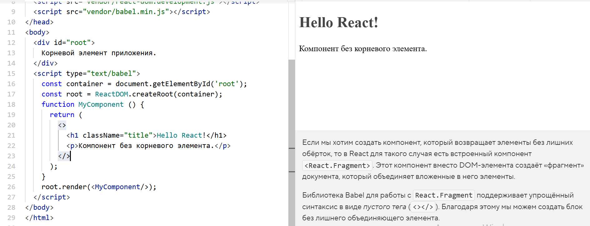

Если мы хотим создать компонент, который возвращает элементы без лишних обёрток, то в React для такого случая есть встроенный компонент <React.Fragment>. Этот компонент вместоDOM-элемента создаёт «фрагмент» документа, который объединяет вложенные в него элементы.
Библиотека Babel для работы с React.Fragment поддерживает упрощённый синтаксис в виде пустого тега (<></>). Благодаря этому мы можем создать блок без лишнего объединяющего элемента.
